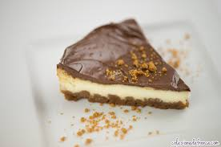
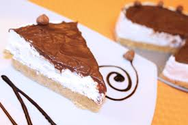

<!DOCTYPE html>
<html>
  <head>
    <meta http-equiv="content-type" content="text/html; charset=UTF-8">
    <title>Чийзкейк с нутела</title>
    <style>
    body{
    background:#ffffe0
}
</head>
  <body>
    <center>
<h1> Бърз чийзкейк с маскрапоне и нутела </h1>
      <hr>
    </center>
    
    <center>
     <i> Необходими продукти:</i>
   <ol>
        <li>За основата:</li>
<ul style="list-style-type:disc">
          <li>бисквити - 250-300 гр.</li>
          <li>захар - 1 с.л.</li>
          <li>масло - 180 гр. за 300 гр. бисквити</li> </ul>
        <li>За крема:</li>
<ul style="list-style-type:disc">
          <li>маскарпоне - 500 гр.</li>
          <li>сметана - 500 мл.</li>
          <li>ванилия - 1 на прах</li>
          <li>пудра захар - 2 супени лъжици</li>
          <li>течен шоколад - около 300 гр.</li>
  </ul>
      </ol>
    </center>
    <i>Начин на приготване:</i> 
    
  <ul style="list-style-type:disc">
      <li>Блатът се приготва по следния начин-бисквитите е натрошават в
        кухненски робот или на ръка, но да са на ситно. Маслото леко се загрява
        и добав към натрошените бисквити. По желание може да сложите малко
        прясно мляко, за да блатът стане по-мек.</li>
 <br>
      <li>Всичко се забъква, разстила се с пръсти във форма с падащи стени и се
        пставя в хладилника да престои, докато се прави кремът.</li>
   <br>
      <li>За крема: Първо се разбива сметаната с миксер в дълбок съд, докато
        стане пухкава и не може да падне, ако се обърне съдът. Към нея се
        прибавя маскарпонето, ванилията на прах и пудрата захар.</li>
<br>
      <li>Изважда се блатът, разнася се кремът отгоре. Нутелата може да се
        загрее в микровълнувата или на водна баня и се разстила на блата.
        Чийзкейкът се оставя да престои няколко часа.</li>
  <br>
      <li>По желание може да се сложи желатин, но не е наложително, защото и без
        него тортата не се разпада.</li>
  </ul>
  </body>
</html></style>
  </head>
  <body>
  </body>
</html>
